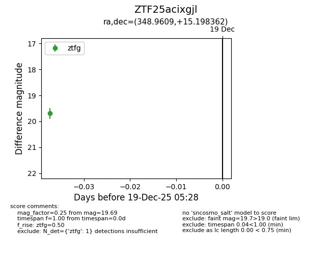
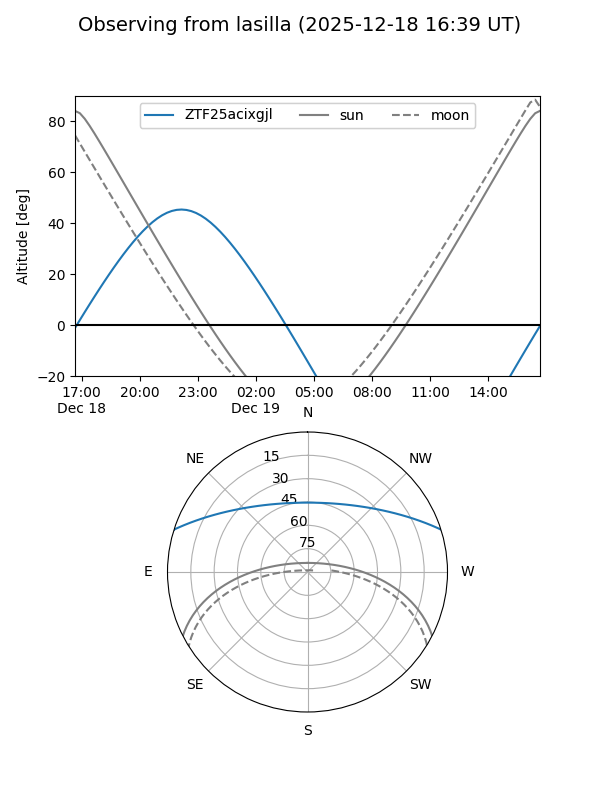
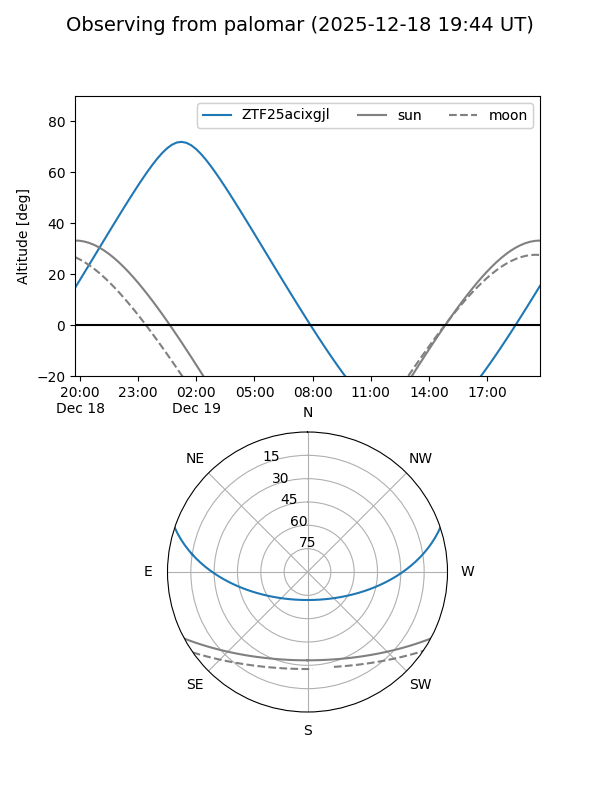

ZTF25acixgjl
Target ZTF25acixgjl at 2025-12-19 05:29
Aliases and brokers:
FINK: fink-portal.org/ZTF25acixgjl
Lasair: lasair-ztf.lsst.ac.uk/objects/ZTF25acixgjl
ALeRCE: alerce.online/object/ZTF25acixgjl
alt names
ZTF25acixgjl (ztf,fink_ztf)
Coordinates:
equatorial (ra, dec) = 348.9609,+15.19836
equatorial (HMS+DMS) = 23:15:50.62,+15:11:54.10
galactic (l, b) = (91.3380,-41.73476)
Flags:
Photometry:
last ztfg=19.69
1 ztfg detections
Lightcurve

Visibility


Additional plots